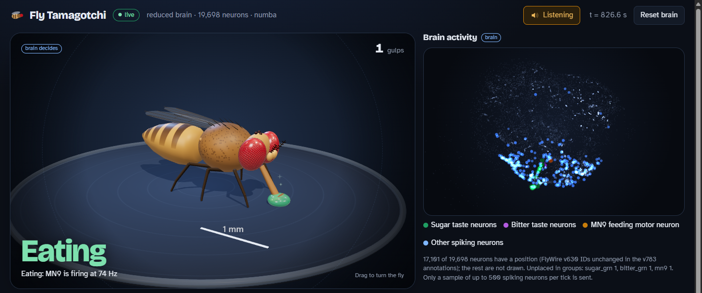
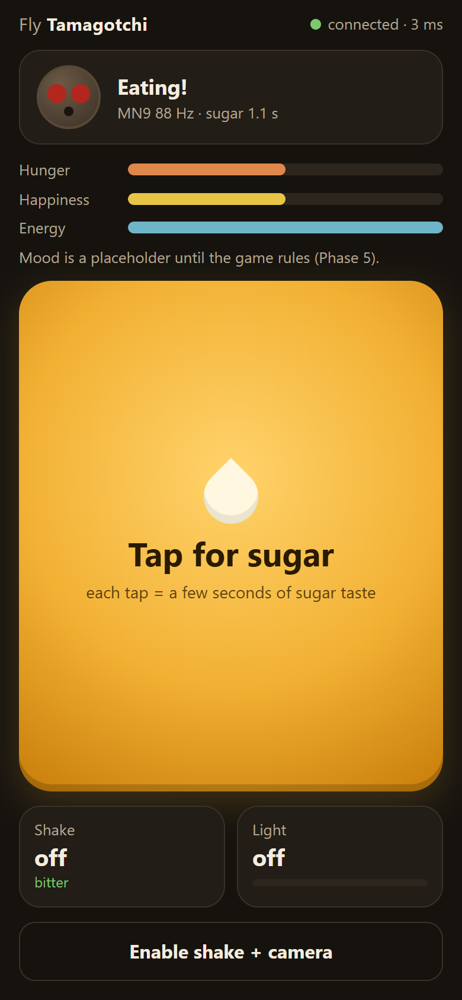
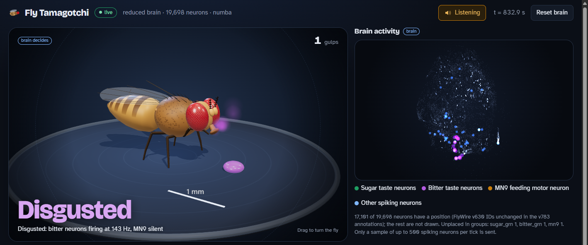
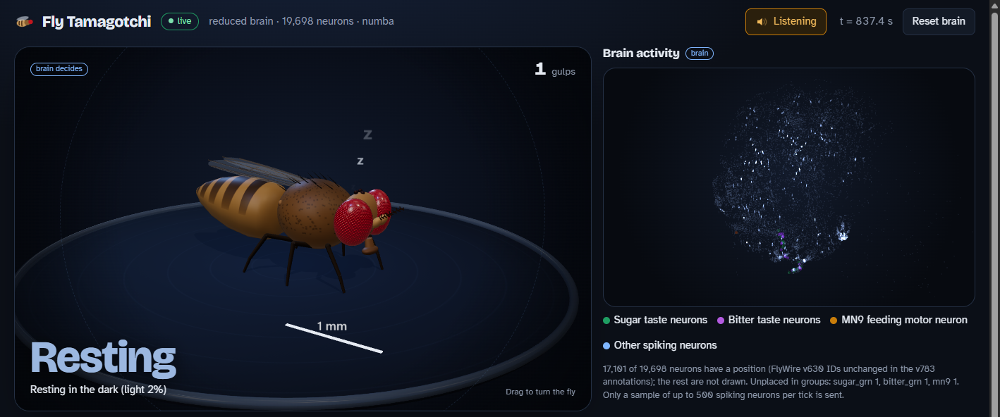

A virtual fruit fly whose eating is decided by a simulated copy of a real fly brain. This guide walks through the science and every part of the code.

brain/server/web/phone/web/dashboard/You feed a fruit fly with your phone. Tap for sugar, shake for something bitter, cover the camera to make it dark. The laptop shows the fly, its mood and its brain lighting up. The twist: nobody wrote a rule saying "the fly eats sugar". The fly eats only if the simulated neurons that drive feeding actually fire.
The brain is a model built from the FlyWire connectome: a map of every neuron in an adult fruit fly brain and every connection between them, traced from electron microscope images. Shiu et al. (2024, Nature) showed that a simple simulation of this wiring predicts real fly behavior. Stimulate the sugar-taste neurons and a feeding motor neuron called MN9 starts firing. Add bitter taste and MN9 almost stops. This project runs that same model live, 50 milliseconds at a time, and connects it to a phone and a screen.
The golden rule. Fly behavior must come from simulated spikes, never from game logic. The fly eats only if MN9 fires. Bitter reduces eating only through the wiring. If the code ever contained if bitter: eat_less, the whole project would be pointless: it would be a cartoon, not a brain.
What the model lacks (hunger, sleep, tiredness) is added as honest game rules, labelled as such everywhere:
| Behavior | Where it comes from |
|---|---|
| Eating (MN9 firing above 20 Hz) | brain |
| Eating less when bitter is present | brain The wiring inhibits MN9. There is no rule. |
| Looking disgusted | brain Bitter taste neurons firing at 20 Hz or more. |
| Neurons flashing in the 3D view, the sounds | brain Real spikes from each 50 ms window. |
| Resting in the dark | game Light is not wired into this brain (see section 11). |
| Hunger, happiness, energy | game Placeholders until Phase 5 adds the rules. |
The project is built in phases (the plan is in PLAN.md, the working rules in CLAUDE.md). Phases 1 to 4 are done, plus a dashboard upgrade:
Still to come: Phase 5 (game rules), Phase 6 (real-iPhone testing), Phase 7 (optional classroom features).
A neuron is a cell that keeps an electrical voltage across its membrane, about −52 millivolts at rest in this model. Input from other neurons nudges that voltage up or down. When it rises past a threshold (−45 mV here), the neuron spikes: it sends a brief pulse down its output wire to every neuron it connects to, and its voltage snaps back to rest. The firing rate is how many spikes per second a neuron makes, in hertz (Hz). "MN9 fires at 80 Hz" means 80 spikes a second.
Connections are synapses. Some are excitatory (they push the receiving neuron toward its threshold) and some are inhibitory (they push it away). A neuron's chemical messenger, its neurotransmitter, decides which: in the fly, acetylcholine excites, GABA and glutamate inhibit.
FlyWire traced every neuron in one adult female fruit fly brain from electron microscope images. The result lists each neuron (with a long ID such as 720575940660219265), how many synapses connect each pair, and a predicted neurotransmitter for each neuron. This project uses release 630, the same one the Shiu et al. paper used: 127,400 neurons and 14,687,178 connections.
A fly tastes with gustatory receptor neurons (GRNs) on its proboscis, the straw-like mouthpart. Some GRNs respond to sugar, others to bitter chemicals. The project uses the exact 21 sugar GRNs and 21 bitter GRNs from the paper's experiments. At the other end is MN9, a motor neuron that drives the muscle which pumps food in. When MN9 fires, the fly is drinking. So the whole question "does the fly eat?" becomes "does MN9 fire?".
Real neurons are complicated. The Shiu et al. model uses the simplest useful stand-in, the leaky integrate-and-fire (LIF) neuron. Each neuron has two numbers that change over time:
dv/dt = (v_0 − v + g) / t_mbr v_0 = −52 mV, t_mbr = 20 ms dg/dt = −g / tau tau = 5 ms if v > v_th (−45 mV): spike, then v = −52 mV, g = 0, frozen for 2.2 ms an arriving spike (1.8 ms after it was sent): g += synapses × 0.275 mV × sign
Every parameter comes from the paper's code (model.py in philshiu/Drosophila_brain_model, commit 91bdd1e), and each one is cited in brain/config.py. The weight per synapse (0.275 mV) was the one free parameter the authors tuned. The simulation steps forward 0.1 ms at a time, so one 50 ms chunk is 500 steps for every neuron.
In the paper, "giving sugar" means making the sugar GRNs fire randomly at a set rate. This is Poisson input: in every 0.1 ms step, each stimulated neuron has a 1.5% chance (150 Hz × 0.1 ms) of receiving an input event big enough to make it spike (68.75 mV, added straight to v). The phone tap turns this on for 2 seconds.
A skeptic could say: "Any big network would light up something when you poke it." To answer that, the project builds a shuffled brain: the same neurons, the same number of connections, the same weights, but each connection's target is picked at random. If the shuffled brain also made MN9 fire on sugar, the effect would come from the setup, not from the real wiring. It doesn't: MN9 stays at 0 Hz in every shuffled brain tested. The behavior lives in the specific wiring.
There are three programs: a Python server on the laptop that runs the brain, a web page on the phone, and a web page on the laptop. They talk over WebSockets, a way for a browser and a server to keep a connection open and send messages both ways, instantly.
| Path | What it is |
|---|---|
PLAN.md, CLAUDE.md | The project plan by phase, and the working rules (golden rule, never loosen tests, cite every parameter). |
brain/ | Everything about the model: data download, connectome, neuron groups, the simulator, the reduced circuit, neuron positions, the validation experiments. |
server/ | The FastAPI server: the live brain loop, WebSockets, web pages, plus tools (fake phone, session recorder, validators). |
web/phone/ | The phone controller page. |
web/dashboard/ | The laptop dashboard: fly, brain, meters, chart, sound. No build step; three.js loads from a CDN. |
tests/ | 77 pytest tests, including the Node.js tests of the phone and dashboard logic. |
reports/ | A plan and report for every phase, the message format, screenshots, and this guide. |
data/ | Downloaded connectome files and results. Not in git: python -m brain.download_data fetches them. |
No tunable number is scattered in the code. There are exactly three places to look:
brain/config.py: model parameters (from the paper), data sources with checksums, validation thresholds.server/config.py: the server (input rate, stimulus length, broadcast rates, eating threshold), the phone page (shake threshold, camera rate), the dashboard checks.web/dashboard/config.js: how the dashboard draws (colors, chart window, fly animation, sound).Follow a single tap from your finger to the fly's proboscis. The file and function that do each step are named so you can open them.
eating: true 116 to 251 ms after the tap (three runs). Most of that is the brain itself: MN9 has to fire hard enough, for long enough, to pass the 500 ms averaging window.pointerdown (not click, which can add a delay on phones) and sends {"type": "sugar"} over the WebSocket. web/phone/phone.js, controller.jsBrainRunner.handle_event sets a timer: sugar is on until now + 2000 ms. It replies with an ack. server/brain_runner.pyapply_inputs sees the timer is running and sets the sugar GRNs' Poisson rate to 150 Hz. Rates only change between chunks, never in the middle of one.LIFSimulator.run does 500 steps of 0.1 ms over 19,698 neurons, on a worker thread so the server stays responsive. With numba this takes about 8 ms. brain/simulator.py, lif_kernel.pyaccumulate counts spikes per neuron and keeps MN9's spikes over the last 500 ms. MN9's rate is its spike count divided by 0.5 s. If that is 20 Hz or more, eating is true.tick for the dashboard (group rates, up to 500 spiking neuron IDs, game state). Every 4th tick also becomes a status for the phone. server/app.py LiveBrain._loopstate.js sees game.eating, the fly switches to "eating" after holding for 150 ms (to stop flicker), extends its proboscis and pumps at a rate set by MN9's rate. The spiking neurons flash in the 3D brain. With sound on, each MN9 spike is a thump.status.eating goes from false to true.download_data.pyEvery data file has a fixed source (a GitHub repository at a pinned commit) and a SHA-256 checksum in brain/config.py. The downloader fetches each file to data/ and refuses it if the checksum differs. This guarantees everyone runs on byte-identical data.
| File | What it holds |
|---|---|
completeness_630.csv | The list of 127,400 neurons; row order = matrix index. |
connectivity_630.parquet | 14.7 million connections: presynaptic index, postsynaptic index, synapse count × sign. |
shiu_figures.ipynb | The paper's notebook, where the sugar, bitter and MN9 IDs are read from. |
shiu_result_sugarR_100Hz.parquet | The paper's own simulation results, used as a sanity target. |
flywire_annotations_783.tsv | Neuron annotations: cell types (for photoreceptors) and 3D positions (for the dashboard). |
connectome.pyload_connectome() reads the two files into a Connectome: an array of IDs and three arrays describing each connection (pre, post, signed_syn). weight_matrix(w_syn) turns this into a sparse matrix, a table of 127,400 × 127,400 where only the 14.7 million non-zero entries are stored.
Worked example. If neuron A makes 12 synapses onto neuron B and A is cholinergic (excitatory), the entry is +12 × 0.275 = +3.3 mV. If A were GABAergic, it would be −3.3 mV. When A spikes, B's g jumps by that amount 1.8 ms later. Rows are the sending neuron, so "everyone A talks to" is one contiguous row: fast to read when A spikes.
shuffle_connectome(conn, seed) builds the control brain: every connection keeps its sender and weight, only the receiver is redrawn at random (no self-connections, no duplicate pairs).
neuron_groups.pyThe project never types a neuron ID into code. It parses the paper's notebook with Python's ast module to read the variables neu_sugar, neu_bitter, id_mn9 and ids_mn9 from the cells that made the paper's figures. The result goes to data/neuron_groups.json, with each group's source (file, cell, variable) recorded. A test checks every group is non-empty and every ID exists in the matrix.
| Group | Neurons | Role |
|---|---|---|
sugar_grn | 21 | Sugar taste input (right side of the labellum) |
bitter_grn | 21 | Bitter taste input |
mn9_primary | 1 | The MN9 used for every readout in the paper; decides eating |
mn9 | 2 | Both MN9 neurons |
photoreceptor_R7, _R8 | 286, 283 | Found but only partly matched between releases; not used as input (full brain only) |
simulator.pyLIFSimulator holds the voltage v and input g of every neuron and advances them with run(duration_ms). It keeps its state between calls, which is what lets the server run the brain forever in 50 ms chunks. Each 0.1 ms step does four things, in the same order as the Brian2 simulator the paper used:
Two subtle details were found by comparing against Brian2 step by step: input arriving during the refractory period must be discarded (keeping it made MN9 fire 19 to 32% too fast), and stimulated neurons have no refractory period, as in the paper's code.
lif_kernel.pyThe first NumPy version took 111 ms per 50 ms chunk on the full brain: 2.2 times too slow for real time. The cost was mostly Python overhead on 500 small steps, not arithmetic. lif_kernel.py is the same step written as plain loops and compiled to machine code by numba, running a whole chunk in one call and releasing Python's global lock so the server can keep talking while the brain runs. A test checks it produces bit-identical spikes, v and g to the NumPy version.
reduced.pyEven compiled, the full brain takes about 67 ms per 50 ms chunk. So the live server runs a reduced circuit: every neuron that lies on a path of at most 5 connections from a sugar or bitter GRN to MN9, with all connections among them. Distances are found with breadth-first search forward from the GRNs (d_out) and backward from MN9 (d_in); a neuron is kept if d_out + d_in ≤ 5.
| Full brain | Reduced circuit | |
|---|---|---|
| Neurons | 127,400 | 19,698 (15.5%) |
| Connections | 14,687,178 | 2,415,250 (16.4%) |
| Wall time per 50 ms chunk (mean) | 66.7 ms | 8.4 ms |
| MN9 with sugar (5 seeds) | 85.8 Hz | 84.2 Hz (−1.9%) |
| MN9 with sugar + bitter | 9.6 Hz | identical on all 5 seeds |
The cut-off of 5 hops was chosen on a design seed that is not one of the validation seeds, so the choice could not be tuned to pass the tests.
positions.pyFor the 3D view, positions come from the FlyWire annotation table (columns pos_x, pos_y, pos_z, in 4 × 4 × 40 nm voxels, converted to micrometres). That table uses release 783, while the brain uses 630. A neuron ID names one fixed reconstruction, so an ID found in both releases is the same neuron. Neurons edited between releases got new IDs; those have no position and are simply not drawn. That leaves 17,101 of the 19,698 reduced-circuit neurons placed. Nothing is guessed.
validate.py, validate_reduced.pyThese run the Phase 1 and Phase 2 experiments (section 9) and write their results to data/. Pass/fail thresholds live in brain/config.py and were set before the first run.
brain_runner.pyBrainRunner owns the simulator and translates between the game and the brain. It has no opinion about behavior; its docstring says so.
handle_event validates each phone message. sugar and bitter set a timer (default 2 s, at most 10 s; a new tap extends, never shortens). light stores a level from 0 to 1. stop ends stimuli. ping answers with pong so the phone can measure its round trip.apply_inputs runs before each chunk and sets each input group's rate to 150 Hz or 0 from its timer.accumulate keeps MN9's spike counts for the last 500 ms; readout_rate_hz turns them into a rate; game_state sets eating = rate ≥ 20 Hz. The 20 Hz line is the same one used to validate the model in Phase 1.make_tick builds the dashboard message: spike counts and rates per group, the total, up to 500 randomly sampled spiking neuron IDs, input rates, game state and timing.app.pyLiveBrain._loop is an endless async loop: apply inputs, run a chunk on a worker thread, summarise, broadcast, then sleep until the next 50 ms mark of wall-clock time. If it falls more than 250 ms behind (a slow laptop), it drops the backlog instead of bursting to catch up.
Each WebSocket client gets its own small queue of 8 messages. If a client is slow, the oldest message in its queue is dropped, so one lagging browser never slows the brain or the other clients. The Hub keeps the clients by role, phone or dashboard.
| Endpoint | Purpose |
|---|---|
/ws/phone | Phone sends sugar, bitter, light, stop, ping; receives hello, ack, status (5 Hz) |
/ws/dashboard | Dashboard sends ping, reset_brain; receives hello, tick (20 Hz) |
/dashboard/, /phone/ | The two pages (server/dashboard.py, server/web.py) |
/api/positions | Neuron positions for the 3D brain |
/api/phone-url, /api/qr.svg | The address a phone should open (ngrok tunnel, else the laptop's Wi-Fi address) and its QR code |
/health, /api/brain | Status and the static brain description |
Every message is JSON and documented in reports/MESSAGE_FORMAT.md. Here is a real tick from the recorded session, taken while the fly was eating (the list of spiking IDs is cut short):
{{TICK_JSON}}
The hello sent on connect describes the brain: its size, the neuron IDs of each group, the input rates, and how eating is read out (group, 20 Hz threshold, 500 ms window), so the dashboard can draw the real threshold instead of copying a number.
| Command | What it does |
|---|---|
python -m server | Starts everything (--brain full, --certfile/--keyfile for HTTPS, --public-url) |
python -m server.fake_phone --spawn | Plays a scripted phone session and checks MN9 goes up with sugar, down with bitter, to zero after stop |
python -m server.record_session --spawn | Records real server output to web/dashboard/samples/session.jsonl for replays and tests |
python -m server.phone_page_check --spawn | Runs the real phone logic in Node against the live brain with mock tap, shake and camera |
python -m server.validate_dashboard | Opens the dashboard in headless Chrome, replays the sample and drives a live session, checks frame rate, lag and errors |
The phone page is plain HTML and JavaScript. Its logic is split in two so it can be tested without a phone:
controller.js holds every decision, with no browser APIs: the shake detector, the camera brightness math, when to send light updates, what to show, when to vibrate, how long to wait before reconnecting. The Node tests import this exact file.phone.js is the glue to the browser: the WebSocket, touch events, the iOS motion permission, the camera, vibration and keeping the screen awake.The yellow zone fills most of the screen and fires on pointerdown for no delay.
The phone reports its acceleration many times a second. If it can only report acceleration including gravity, a slow low-pass filter estimates gravity and subtracts it. The detector then counts peaks above 15 m/s². Three peaks within 800 ms is a shake; a 1.5 s cooldown stops one long shake from counting many times. Walking, rest and a single jolt are not shakes (tested).

Four times a second, the front camera's frame is shrunk to 32 × 24 pixels and its average brightness computed (0 = black, 1 = white). The page sends {"type":"light","level":…} when the level moves by 0.05 or more, or every 2 seconds. Light is a game input only: the model's photoreceptors could not be matched reliably between data releases (section 11).
iOS Safari only allows motion sensors and the camera on HTTPS pages, and only asks for motion permission from inside a button tap. So the page has one "Enable shake + camera" button, and the server supports HTTPS with a certificate or an ngrok tunnel. The dashboard's QR code picks up a running ngrok tunnel automatically.
The dashboard is a set of small JavaScript modules with no build step. main.js wires them together and runs one animation loop (requestAnimationFrame, up to 60 times a second) that draws whatever the latest server message says.
| Module | Job |
|---|---|
source.js | Where messages come from: the live WebSocket, or a recorded session played back (?replay=samples/session.jsonl). |
state.js | Pure state, no drawing: applies each message, keeps 10 s of rates for the chart, decides the fly's state, counts gulps. Tested in Node on the recorded session. |
fly3d.js, fly_motion.js | The 3D fly. fly_motion.js holds the poses and the rules for motion (tested); fly3d.js builds and animates the model with three.js. |
brain3d.js | The 3D brain: 17,101 points at their real positions; spiking neurons flash and fade over 300 ms, colored by group. |
chart.js | The firing-rate chart for the last 10 s of sugar GRNs, bitter GRNs and MN9, with bands showing when each input was on. |
sound.js | "Hear the brain". |
phone_link.js | The QR code panel. |
config.js | Every display setting. |
deriveFlyState in state.js checks, in order, and the first match wins:
tick.game.eating is true (the server's MN9 readout);A new state has to hold for 150 ms before the fly changes, which stops it flickering on a single noisy tick. Note the order: if sugar and bitter are both on and MN9 still crosses 20 Hz, the fly eats. The brain decides, not the priority list.


The fly is built from simple shapes in code, so there is no model file to download: stretched spheres for the head and thorax, a lathe (a profile spun around an axis) for the tapered abdomen, flat shapes with drawn veins for the wings, and three segments per leg. Textures such as the compound eye's hexagonal facets and the abdomen's dark bands are painted onto small canvases at startup. It stands at true scale next to a 1 mm scale bar (a female Drosophila is about 2.5 mm long).
Quality levels. Drawing shadows and reflections is cheap on a graphics card but expensive when the computer has to draw every pixel in software. The fly checks which renderer the browser uses. On a real GPU it uses full quality (measured at 59.9 frames per second on the development laptop). On a software renderer it drops antialiasing, shadows and reflections, draws at 0.6× resolution and at most 20 times a second. If full quality turns out too slow, it steps down by itself. If three.js cannot load at all, a 2D cartoon fly takes over.
Below the stage, three meters show the sugar GRNs, the bitter GRNs and MN9, with a line on the MN9 meter at the eating threshold (read from the server's hello), and one sentence explaining the current state. This is the panel to point at when someone asks "but is it really the brain?".
Neuroscientists often listen to their recordings: an electrode's signal played through a speaker turns each spike into a click. sound.js does the same with the model's spikes using the browser's Web Audio API. For each tick, planTick (a pure, tested function) decides what to play from the spike counts, and the sounds are scattered across the next 50 ms:
Each sound type has a cap per tick so a busy brain doesn't turn into noise. With background noise off, a brain at rest makes no spikes, so a resting fly is silent: the silence is real too.
A simulation can look convincing and still be wrong. The project builds a chain of evidence where each link is checked by an automated test or a validation script, with pass/fail thresholds written into config before the first run.
tests/test_simulator.py| Check | Threshold (set before the run) | Result |
|---|---|---|
| Sugar drives MN9 | ≥ 20 Hz | 85.8 Hz |
| Bitter reduces MN9 | ≥ 25% drop and > 2 pooled SD | 89% drop |
| Shuffled brain doesn't feed | MN9 ≤ 5 Hz | 0.0 Hz |
| Matches the paper's own result | within ±25% | +2% |
| Reduced circuit matches full brain | within 10% | −1.9% / 0.0% |
| Reduced circuit speed per 50 ms | mean and p95 < 35 ms | 8.4 / 12.1 ms |
| Tap to eating on the phone | under ~300 ms (plan target) | 116–251 ms |
The shuffled brain is not dead: sugar still drives 91 downstream neurons in it. The activity just never finds its way to MN9. In the real brain, 349 downstream neurons fire.
python -m venv .venv .venv\Scripts\activate (macOS/Linux: source .venv/bin/activate) pip install -r requirements.txt python -m brain.download_data # ~120 MB, checksummed python -m brain.neuron_groups # writes data/neuron_groups.json python -m brain.reduced # writes data/reduced_circuit.json
python -m server # then open http://localhost:8000/ on the laptop ngrok http 8000 # in a second terminal, for HTTPS on the iPhone
Scan the dashboard's QR code with the iPhone, tap "Enable shake + camera", and play. Without ngrok, tapping still works over the laptop's Wi-Fi address; shake and camera need HTTPS.
pytest -q # 77 tests (needs Node.js 22+ for the JS tests) python -m brain.validate # Phase 1 experiments, full brain (slow) python -m brain.validate_reduced # Phase 2 experiments python -m server.validate_dashboard # dashboard in headless Chrome
| To change… | Edit |
|---|---|
| How long one tap gives sugar | server/config.py default_stimulus_ms (2000) |
| How strongly taste neurons are driven | server/config.py input_rate_hz (150 Hz, the paper's default) |
| What counts as eating | server/config.py eating_threshold_hz, eating_window_ms |
| Run the full brain instead | python -m server --brain full (slower than real time) |
| Shake sensitivity, camera rate | server/config.py PhoneConfig |
| When the fly looks disgusted or rests | web/dashboard/config.js disgustBitterHz, darkLevel |
| Fly animation, quality, sound volume | web/dashboard/config.js fly3d, sound |
| Model parameters | brain/config.py LIFParams: only with a source to cite |
Working rules worth keeping (from CLAUDE.md): never loosen a test threshold or delete a test to make it pass; set thresholds before the first run; never hard-code a guessed neuron ID; cite a source for every model parameter; label every game rule as a game rule.
/dashboard/?replay=samples/session.jsonl&speed=4.server/config.py to 100 Hz and restart. MN9 should drop to about 68 Hz, as in the paper.--brain full and watch the lag counter at the bottom of the dashboard.tests/test_behavior.py is short and says exactly what "the model works" means.| Brian2 | The neural-simulation library the paper's code uses. This project reimplements the same model without it, and checks against it. |
| Chunk | 50 ms of simulated time, run in one go. The server runs one chunk every 50 ms of real time. |
| Connectome | A complete map of neurons and their connections. |
| CSR / sparse matrix | A way to store a huge table that is mostly zeros by keeping only the non-zero entries, row by row. |
| FlyWire | The project that reconstructed the adult fruit fly brain. Releases (630, 783) are versions of that reconstruction. |
| GRN | Gustatory receptor neuron: a taste-sensing neuron. |
| Hz | Per second. A firing rate of 20 Hz is 20 spikes per second. |
| LIF | Leaky integrate-and-fire: a neuron model that adds up input, leaks toward rest and spikes at a threshold. |
| MN9 | A motor neuron that drives the fly's feeding pump. Its firing is the "eating" readout. |
| numba | A Python tool that compiles numeric loops to machine code. |
| Poisson input | Random input events at a given average rate, independent from moment to moment. |
| Proboscis | The fly's extendable mouthpart, which tastes and drinks. |
| Reduced circuit | The 19,698-neuron part of the brain on short paths from taste to MN9, used for live play. |
| Refractory period | The 2.2 ms after a spike during which a neuron cannot spike again. |
| Shuffled brain | A control: same neurons and weights, connections pointed at random targets. |
| Tick | One dashboard message summarising a 50 ms window. |
| WebSocket | A connection between browser and server that stays open, so both can send messages at any time. |
Reference: Shiu, P.K., Sterne, G.R., Spiller, N. et al. A Drosophila computational brain model reveals sensorimotor processing. Nature 634, 210–219 (2024). Code: github.com/philshiu/Drosophila_brain_model. Connectome: FlyWire (Dorkenwald et al., Schlegel et al., Nature 2024).